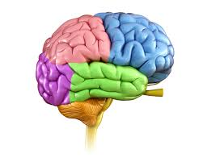
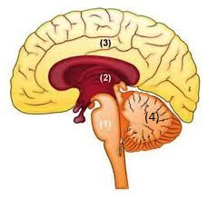
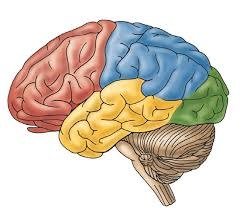
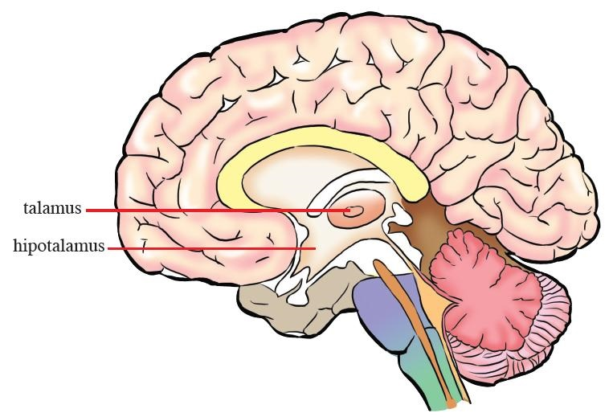

|  | Mozak i kičmena moždina čine centralni nervni sistem. Sve informacije iz tijela i spoljašnje sredine stižu u ove organe. U njima se, kao u nekom moćnom računaru, informacije obrađuju, dešifruju, memorišu, a kao rezultat nastaju odgovori koji se šalju do različitih organa. Mozak kontroliše sve procese u organizmu; omogućava nam da komuniciramo i osjećamo, izvor je naše svijesti, kreativnosti, inteligencije. |
Mozak je najsloženiji dio nervnog sistema. Štite ga lobanja i moždane ovojnice. Spoljašnja ovojnica je tvrda, naliježe na kosti lobanje. Ispod tvrde ovojnice nalazi se tanka paučinasta ovojnica. Treća ovojnica je meka, naliježe na površinu mozga i bogata je kapilarima. Prostor izmedju paučinaste i meke ovojnice ispunjen je likvorom. Ova tečnost štiti mozak od potresa i udaraca, a ima i ulogu u transportu materija. U mozgu postoje četiri moždane komore, koje su takodje ispunjene likvorom. To su međusobno povezane šupljine, koje se nastavljaju u kanal kičmene moždine. Mozak grade: veliki mozak, međumozak,mali mozak i moždano stablo.
Veliki mozak zauzima najveći dio lobanje i prekriva ostale dijelove mozga. Površina mu je vijugavo naborana, a na presjeku se jasno razlikuju siva i bijela masa. Siva masa na površini naziva se kora velikog mozga. Veliki mozak se sastoji od dvije polovine ili hemisfere-lijeve i desne. Međusobno su spojene snopovima nervnih vlakana preko kojih se informacije prenose iz jedne u drugu hemisferu. Svaka hemisfera velikog mozga ima pet režnjeva.
|  | (1) moždano stablo (2) međumozak (3) veliki mozak (4) mali mozak |
Kora velikog mozga obavlja najsloženije funkcije u našem organizmu: nastanak osjećaja (dodira, zvuka, boje, oblika, ravnoteže), omogućavanje svih vrsta voljnih pokreta, kao i složenih aktivnosti (govor, učenje, pamćenje, orijentacija u prostoru...)
U kori velikog mozga nalaze se nervni centri-grupe ćelija koje su specijalizovane za obavljanje određenih funkcija. U senzitivne (osjećajne) centre stižu informacije iz čulnih organa i mi ih postajemo svjesni tek kada se "dešifruju" u ovim centrima. Zato, ukus i miris hrane osjećamo tek kada nervni impulsi stignu do centara za ukus i miris u kori velikog mozga. Iz motornih (pokretačkih) centara kore velikog mozga kreću informacije za pokretanje skeletnih mišića. Ne možemo obavljati voljne pokrete ako su ovi centri oštećeni. Najsloženiji dijelovi kore velikog mozga, koji objedinjuju sve njene funkcije, jesu centri viših nervnih djelatnosti. To su učenje, razmišljanje, logičko zaključivanje, orijentacija.
|  | (crvena) čeoni režanj (plava) tjemeni režanj (zelena) potiljačni režanj (žuta) sljepoočni režanj |
Čeoni režanje je zaslužan za: voljne pokrete, govor, učenje, pamćenje, razmišljanje
Tjemeni režanj: dodir, toplota, hladnoća, bol
Potiljačni režanj: vid
Sljepoočni režanj: sluh, ukus
Većina nervnih centara je parna, tj. nalaze se i u lijevoj i u desnoj hemisferi. Neparni centri nalaze se samo u jednoj hemisferi, pa je ta hemisfera dominantna za određenu funkciju. Smatra se da je lijeva hemisfera većine ljudi dominantna u kontroli govora, dok je desna hemisfera zadužena za umjetnost, kreativno mišljenje, orijentaciju u prostoru.
Mali mozak se nalazi u zadnjem dijelu lobanje. I on ima dvije hemisfere, povezane središnjim dijelom-crvom. Mali mozak grade siva i bijela masa. Bijela masa se nalazi u unutrašnjosti i ispunjava međuprostor između sive mase, što na poprečnom presjeku podsjeća na razgranato drvo ("drvo života"). Siva masa na površini gradi koru, koja ima paralelno postavljene vijuge i brazde. U malom mozgu se nalaze centri za održavanja ravnoteže i za kontrolu i koordinaciju pokreta.
Međumozak se nalazi iznad srednjeg mozga a pokrivaju ga hemisfere velikog mozga. Centralna šupljina međumozga je treća moždana komora. Kroz dio međumozga koji nazivamo talamus, prolaze nervna vlakna na putu ka velikom mozgu. Talamus selektuje te informacije, ima ulogu u regulisanju pažnje i svijesti itd. Donji dio međumozga nazivamo hipotalamus. U hipotalamusu se nalaze centri koji kontrolišu temperaturu tijela, rad unutrašnjih organa, osjećaj gladi, žeđi... Hipotalamus je povezan sa glavnom žlijezdom endokrinog sistema-hipofizom.
|  |
Produžena moždina, moždani most i srednji mozak čine moždano stablo. Raspored nervnih masa je drugačiji u odnosu na veliki i mali mozak. Siva masa se nalazi u unutrašnjosti, a spolja je bijela masa. Produžena moždina spaja mozak sa kičmenom moždinom. U njoj se ukrštaju osjećajna i pokretačka nervna vlakna koja povezuju mozak sa ostalim dijelovima tijela. Zato desna hemisfera velikog mozga kontroliše lijevu polovinu tijela i obrnuto. U produženoj moždini nalaze se centri osnovnih životnih funkcija: disanja i rada srca, gutanja, sisanja, pa se produžena moždina naziva "čvor života". Iznad produžene moždine je moždani most. Dio mozga između moždanog mosta i međumozga naziva se srednji mozak. On ima značajnu ulogu u održavanju tonusa mišića; u njemu se nalaze primarni centri vida i sluha.
Kičmena moždina ima oblik vrpce, zaštićena je kičmenim kanalom izgrađenim od pršljenova. Počinje od produžene moždine i pruža se do drugog slabinskog pršljena. Kao i mozak, zaštićena je trima ovojnicama; između paučinaste i meke ovojnice cirkuliše likvor.
Sredinom kičmene moždine pruža se centralni kanal, koji je povezan sa moždanim komorama. Oko centralnog kanala nalazi se siva masa kičmene moždine, dok se bijela masa nalazi spolja. Na poprečnom presjeku siva masa ima oblik slova X. Na njoj se razlikuju prednji i zadnji rogovi. U zadnje rogove sive mase ulaze osjećajna nervna vlakna, a iz prednjih rogova izlaze pokretačka vlakna. Ova vlakna se po izlasku iz kičmene moždine spajaju sa osjećajnim vlaknima i grade mješovite nerve.
Bijela masa kičmene moždine sadrži dvije vrste nervnih vlakana. Ushodna nervna vlakna sprovode nadražaje u pravcu mozga, dok nishodna nervna vlakna sprovode nadražaje iz mozga ka organima i periferiji tijela. Zato se kaže da je kičmena moždina most koji povezuje tijelo i mozak. U sivoj masi kičmene moždine nalaze se centri refleksnih radnji.